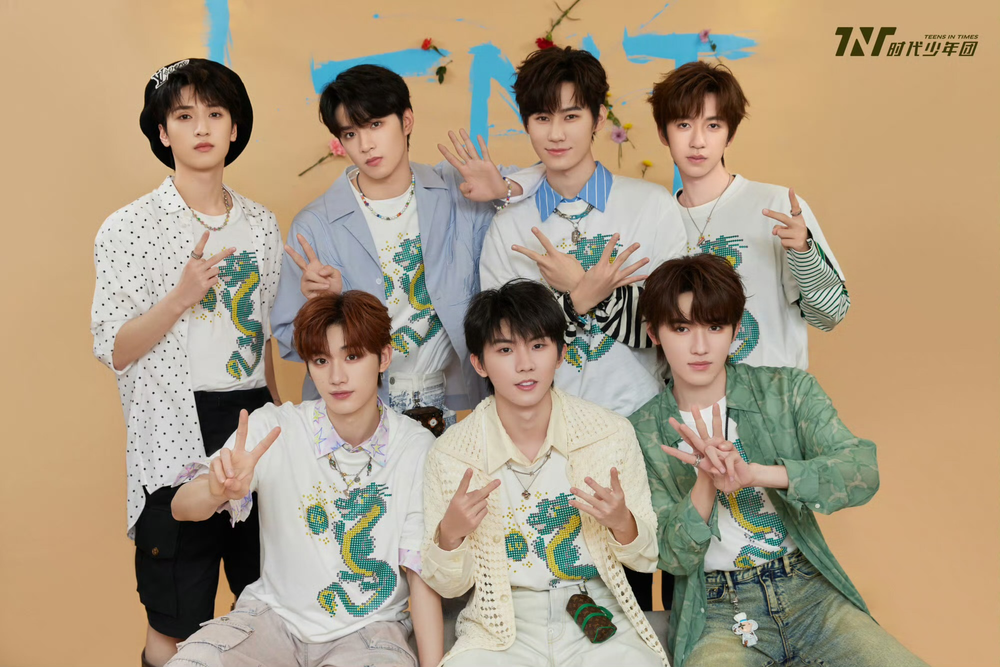
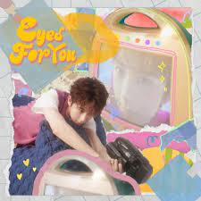

时代少年团(Teens in times)
 Teens in Times (TNT) je mužská spevácka skupina z Číny, ktorú založil Times Fengjun. Pozostáva zo siedmich ľudí,Ma Jiaqi, Ding Chengxin, Song Yaxuan, Liu Yaowen, Zhang Zhenyuan, Yan Haoxiang a He Junlin.
Dňa 23. novembra 2019 usporiadala Times Youth League debutový a prvý koncert novej piesne.
KLIKNI NA OBRÁZOK A VYPOČUJ SI ICH HUDBY
马嘉祺(Ma Jiaqi)
Ma Jiaqi, narodený 12. decembra 2002 v meste Zhengzhou v provincii Henan, je mužský popový spevák a herec z Číny a vedúci mužskej speváckej skupiny TNT. Študuje na Central Academy of Drama
丁程鑫(Ding Chengxin)
Ding Chengxin, narodený 24. februára 2002 v okrese Anyue, mesto Ziyang, provincia Sichuan, je spevák a herec z Číny, člen chlapčenskej speváckej skupiny TNT a študuje v experimentálnej triede Pekingská filmová akadémia
宋亚轩(Song Yaxuan)
Song Yaxuan, narodený 4. marca 2004 v okrese Boxing, mesto Binzhou, provincia Shandong, je spevák a herec z Číny, člen mužskej speváckej skupiny TNT a študuje na Central Academy of Drama.

刘耀文(Liu Yaowen)
Liu Yaowen, narodený 23. septembra 2005 v Chongqing , je popový spevák a herec z Číny a člen chlapčenskej speváckej skupiny TNT.

f
张真源(Zhang Zhenyuan)
Zhang Zhenyuan, narodený 16. apríla 2003 v Chongqing, je popový spevák a herec z Číny. Je členom chlapčenskej speváckej skupiny TNT. Študuje hudobné divadlo na Central Academy of Drama.
严浩翔(Yan Haoxiang)
Yan Haoxiang, narodený 16. augusta 2004 v Guangzhou, provincia Guangdong, je popový spevák, filmový a televízny herec v Číne a člen chlapčenskej speváckej skupiny TNT. Momentálne študuje v na vysokoškolskej experimentálnej triede herectva na Pekingskej filmovej akadémii.

贺俊霖(He Junlin)
He Junlin, narodený 15. júna 2004 v Chengdu, provincia Sichuan, je spevák a herec z Číny a člen mužskej speváckej skupiny TNT. Na Communication University of China
